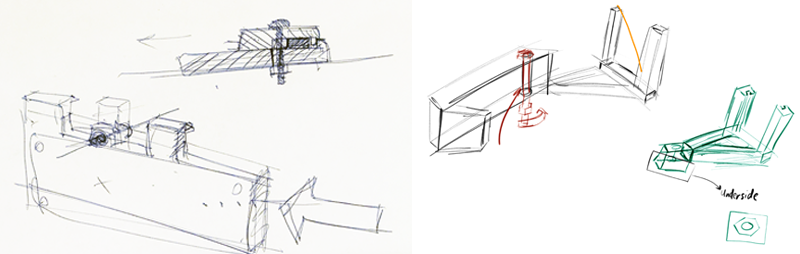

Independent Research
Invention Lab
Summer 2018

Blepharospasm is a focal dystonia and movement disorder where abnormal antagonistic muscle activity leads to impaired blinking. Because blepharospasm affects a person's ability to keep their eyes open, it disables people in their day-to-day functioning in activities from socialization to driving.
There is neither concrete understanding of how blepharospasm originates nor is there consensus on how to diagnose it. Given the limited understanding of the disorder, diagnosis is often approached through process of elimination and excessive testing. However, as the phenotype of the disorder is setting-dependent (i.e. someone may be triggered more during conversation than during a diagnostic test), the data portrayed by diagnostic tests may be incongruent with an individual‘s outpatient experience of their disorder.
Conceptual sketching of the prototype.
Objectives and Purpose
To understand the day-to-day impact of dystonia outside of the hospital setting, medical professions currently only have their patient’s word to rely on. Therefore, my goal this summer is to create a noninvasive and nonintrusive wearable tool to quantify dystonia outside of the hospital setting.
By creating a data diary for blepharospasm, individuals can facilitate diagnosis and help doctors differentiate between blepharospasm and other disorders like myasthenia gravis and chronic progressive external opthalmoplegia.
Blink activity would be tracked as a function of time throughout the day. The tiny no-infrared camera module, together with OpenCV, would use eye aspect ratio as a correlate for blinking.
Retrospective analysis would allow individuals to identify what triggers them and what doesn’t, allowing them to do more for themselves than just to take the main line of treatment: local paralysis through injections of Botulinum toxin.
Design Engineering + Software Goals
- Explore a new line of tools (Utilmakers, Trotec, Raspberry Pi Zero, OpenCV) at the Invention Lab.
- Build a snap-fit housing for the Raspberry Pi Zero (rPi) that supports the extended camera module at the temple tip of the glasses.
- Design a 3D-printable hinge that would lock tight a triangular supporting body that holds a mirror.
- Implement an optics trick that allows for the reflection of the eye to be caught in the visual field of the camera. By fastening the hinge with a nut and bolt, the angle of reflection could be adjusted for each individual.
- Establish a data pipeline from smart wearable to web interface.
Process
Preliminary work
I began experimenting with different input modalities beginning in February 2018. Early threads of work involved Hall effect sensors, which read how local magnetic fields were altered by blinking. The caveat I found with hall effect sensors was that any motion (i.e. walking) could disturb the signal.
Also in February 2018, I tested out facial detection on a Raspberry Pi 3+ using tutorials provided by Adrian Roseblock from PyImageSearch and learned how eye blinking can be modeled and captured through computer vision and the eye aspect ratio.
In June 2018, I realized that by using the Raspberry Pi Zero W, I could merge these two parallel threads of preliminary work. I began with sketches, a pair of glasses, and cardboard/paper prototyping. I received a great deal of instructive advice from Invention Lab manager Chris Myers and Mitchell Karchemsky.
Design Engineering Iterations
My first prints for the housing were also my first prints using the Invention Lab’s Ultimaker 2, 2+ Extended, and 3 Series printers. Because my early CADs required overhangs and support along multiple axes, I learned how to print and design with dual extrusion (PLA + breakaway material) in mind.
Iteration pared down the thickness of the overhangs and points of contact in general. Six grips became 3 for an adequate snap-fit onto the glasses.
An early prototype demonstrated that although the camera could capture and focus even just millimeters away from the pupil, a camera positioned right in front of the eye would be too intrusive and would obscure the entire right visual field. This led to the introduction of the angled mirror, at the advice of Chris Myers and Mitchell Karchemsky.
Software Iterations
As I iterated upon the housing during the day, I also repeatedly iterated on the build of OpenCV on the Raspberry Pi Zero. After days of debugging the build process, the final build took well over 12 hours. Fixes required amping up the swap size on the machine, replacing one of the source files of the ffmpeg (a video library dependency), and figuring out the missing flag that was causing an early-exit to the compilation.
In July, I also began working on the data processing side, using the library matplotlib in to plot out an interactive graph as the camera (well, my webcam for now) took in the signal. The next challenges on this side involve developing on a webserver such as Rails adequate to host OpenCV and my python data post processing. Then I need to circle back to sync the design engineering side with the software side of this project.
Lessons from the prototype
Experimenting with discrete and continuous readouts (i.e. Hall effect sensors vs. cameras) led to my conclusion that blinking is better tracked as a continuous signal than a discrete and binary one. This is because blinking can manifest in at a variety of “amplitudes” depending on the synergy of muscle activity that produced it and whether or not the blink was spontaneous, reflexive, or voluntary.
The Raspberry Pi Zero camera runs with some lag and further work needs to investigate whether more efficient cameras (endoscope/tiny spy cameras) can be incorporated in its stead.
The body mounting mirror needs to be better supported against gravity, which also tends to undo the fastening mechanism fastening it all together
Cardboard drafts and hot glue greatly informed my CADing by giving me a 2.5D basis to measure upon.
Sketching between each iteration helped clarify design flaws. I realized this when I consulted Mitchell Karchemsky about incorporating a mirror. In my initial design, I had rested the mirror parallel to the plane of the glasses lens. However, after sketching it out with Mitchell, I learned that such a straight angle would not allow eye to fall within the camera’s viewport.
After two years of using Type A printers and CADing without regard for the printing process, I finally realized that CADing with print orientation and support structures in mind drastically reduces chances of print failure.
Future Work
- Stabilizing the second body that supports the mirror and optimizing the size and angle of the mirror so that when the mirror is mounted it is less noticeable to both the wearer and the observer.
- Finding an alternative method to fasten the two mounting (glasses/mirror) bodies at the hinge, because as of right now, the bolt currently comes loose easily.
- Attaching an external power source to forego wall outlets.
- Polishing up the Python/OpenCV postprocessing and design of the web interface.
- User testing (!!) to verify that the eye can stay in the range of the camera throughout the day during activities.
- On a complete other note...an alternate line of work to pursue would be to incorporate EEG/EMG electrodes onto these glasses. Facial electrodes are widely used during EEG and EMG procedures, though the blink signal is generally filtered out during post-processing. Like the preliminary work done using Hall-effect sensors, EEG/EMG electrodes would necessitate on-the-skin circuitry, but they could be far more reliable, easier to attach, and also yield continuous readouts.
Acknowledgements
Many thanks to:
- Invention Lab staff and friends: Chris Myers, Mitchell Karchemsky, Adam Hutz
- My professors and mentors: Eric Paulos, Sarah Sterman
- My family: Haining Liu, Chun Chang, Jie Chang, Eric Liu